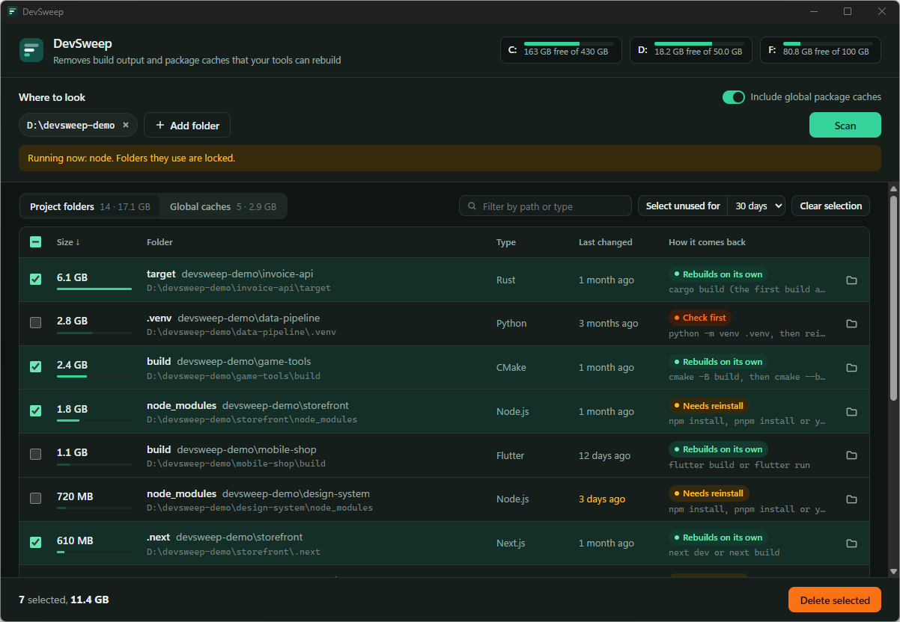

invoice-apiRust
target
6.1 GB
Comes back with cargo build
Rebuilds on its own
Finds node_modules, target folders and package caches, and leaves everything else.
Version 0.4.2, free and open source under the MIT license.

invoice-apiRust
target
6.1 GB
Comes back with cargo build
Rebuilds on its own
data-pipelinePython
.venv
2.8 GB
Comes back with python -m venv .venv
Check first
A folder counts only when its project file sits next to it. Names like build or target also need the build tool’s own files inside.
| Folder | Needs next to it | Comes back with |
|---|---|---|
| node_modules | package.json | npm install |
| Rust target | Cargo.toml | cargo build |
| Gradle build | build.gradle | gradle build |
| .NET bin and obj | a .csproj file | dotnet build |
| Python .venv | pyproject.toml | a new venv, marked check first |
| Unity Library | ProjectVersion.txt | opening the project |
A folder can’t be picked while a program or a dev tool runs inside its project.
In use by cargo
A folder is renamed before anything inside it goes.
node_modules.devsweep-trash
The scan never enters these.
Docker frees its own space. WSL disks get compacted.
docker builder prune --all
Rust target folders alone took 63 GB of a 100 GB drive.
On the machine DevSweep was written on.
Windows 10 or 11 with WebView2, any 64-bit Linux, or macOS 11 or later.
The installer and the AppImage update themselves. The Windows files are not code-signed yet, so Windows shows “Windows protected your PC” the first time. Click More info, then Run anyway. See signing and checksums.
The macOS build for Apple Silicon and Intel Macs is experimental. It hasn’t been tried on a real Mac yet, and macOS asks you to allow it the first time. See the macOS notes.
| System | File | Size |
|---|---|---|
| Windows installer | DevSweep_0.4.2_x64-setup.exe | 3.3 MB |
| Windows portable | DevSweep_0.4.2_x64-portable.zip | 4.5 MB |
| Debian, Ubuntu | DevSweep_0.4.2_amd64.deb | 4.7 MB |
| Fedora, openSUSE | DevSweep-0.4.2-1.x86_64.rpm | 4.7 MB |
| Any Linux | DevSweep_0.4.2_amd64.AppImage | 83 MB |
| macOS, experimental | DevSweep_0.4.2_universal.dmg | 7.6 MB |
Every download is built on GitHub-hosted runners from the source at the release tag by the release workflow.
SHA256SUMS.txt. Compare it with Get-FileHash in PowerShell or sha256sum --check on Linux.